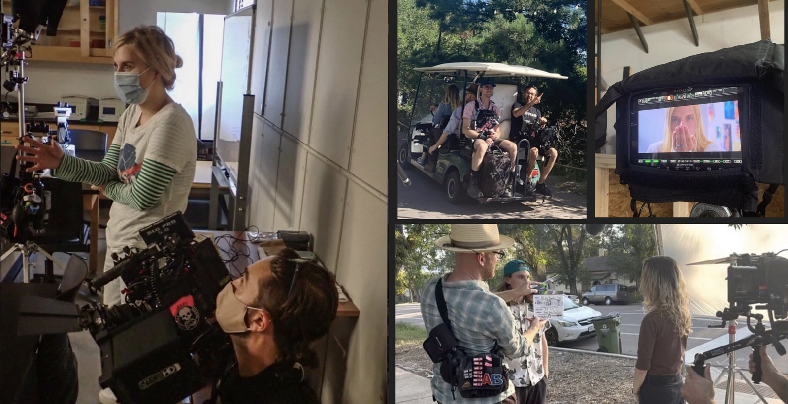
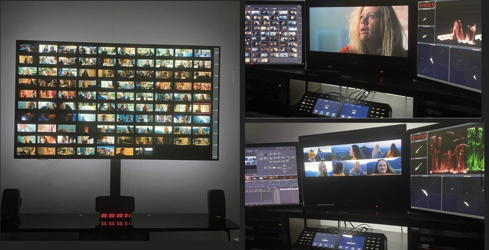

All content A.M. Lewis has 100% produced and directed through pre, set, and post production (unless noted).


Feature and episodic scripts exploring grief, identity, and the family ties that both wound and heal — five stories in various stages, from post-production to the page.
All scripts that have not yet been produced are excerpts from their first few pages. If you would like to read the complete feature or series, an NDA is required. Please email alewis@ripplehouse.media to acquire an NDA and receive the full screenplay.
A mixed-media (live action + claymation) feature exploring grief, family trauma, and healing. All the Beautiful Things earned recognition for its screenplay on Coverfly's Best of 2024 List and garnered media attention from Deadline Hollywood.
A live-action series exploring resentment, addiction, and the pursuit of identity through competitive extreme sports.
A live-action feature blending mystery, thriller, and horror while examining intergenerational trauma, poverty, and religious hypocrisy.
A coming-of-age drama about a girl with OCD struggling with the grief of losing her father and her emerging sexual identity as she grows up under the abuse of her stepfather.
A feature exploring jealousy, obsession, and the destructive pursuit of beauty.